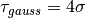

beams package¶
Submodules¶
beams.beams module¶
Module containing the fundamental beam class with methods to compute beam statistics
| Authors: | Danilo Quartullo, Helga Timko, ALexandre Lasheen |
|---|
-
class
beams.beams.Beam(General_parameters, n_macroparticles, intensity)¶ Bases:
object-
beta_r= None¶ Relativistic beta of the synchronous particle
-
bl_gauss_tau¶ Gaussian bunch length converted to the tau coordinate in [s]
-
bl_gauss_z¶ Gaussian bunch length to the z coordinate in [m]
-
bp_gauss_tau¶ Gaussian bunch position converted to the tau coordinate in [s]
-
bp_gauss_z¶ Gaussian bunch position converted to the z coordinate in [m]
-
delta¶
-
energy= None¶ Energy of the synchronous particle [eV]
-
gamma_r= None¶ Relativistic gamma of the synchronous particle
-
losses_cut(theta_min, theta_max)¶
-
losses_separatrix(GeneralParameters, RFSectionParameters)¶
-
mean_delta¶
-
mean_tau¶
-
mean_z¶
-
momentum= None¶ Momentum of the synchronous particle [eV/c]
-
sigma_delta¶
-
sigma_tau¶
-
sigma_z¶
-
statistics()¶
-
tau¶
-
z¶
-
beams.distributions module¶
Module to generate distributions
| Authors: | Danilo Quartullo, Helga Timko, Alexandre Lasheen, Juan Esteban Muller, Theodoros Argyropoulos |
|---|
-
beams.distributions.line_density_function(coord_array, dist_type, bunch_length, bunch_position=0, exponent=None)¶ Line density
-
beams.distributions.longitudinal_bigaussian(GeneralParameters, RFSectionParameters, beam, sigma_x, sigma_y=None, xunit=None, yunit=None, seed=None, reinsertion='off')¶
-
beams.distributions.matched_from_distribution_density(Beam, FullRingAndRF, distribution_options, main_harmonic_option='lowest_freq', TotalInducedVoltage=None, n_iterations_input=1)¶ Function to generate a beam by inputing the distribution density (by choosing the type of distribution and the emittance). The potential well is preprocessed to check for the min/max and center the frame around the separatrix. An error will be raised if there is not a full potential well (2 max and 1 min at least), or if there are several wells (more than 2 max and 1 min, this case will be treated in the future). A margin of 5% is applied in order to be able to catch the min/max of the potential well that might be on the edge of the frame. The slippage factor should be updated to take the higher orders. Outputs should be added in order for the user to check step by step if his bunch is going to be well generated. More detailed ‘step by step’ documentation should be implemented The user can input a custom distribution function by setting the parameter distribution_options[‘type’] = ‘user_input’ and passing the function in the parameter distribution_options[‘function’], with the following definition: distribution_density_function(action_array, dist_type, length, exponent = None). The user can also add an input table by setting the parameter distribution_options[‘type’] = ‘user_input_table’, distribution_options[‘user_table_action’] = array of action (in H or in J) and distribution_options[‘user_table_density’]
-
beams.distributions.matched_from_line_density(Beam, FullRingAndRF, line_density_options, main_harmonic_option='lowest_freq', TotalInducedVoltage=None, plot_option=False, half_option='first')¶ Function to generate a beam by inputing the line density. The distribution density is then reconstructed with the Abel transform and the particles randomly generated.
-
beams.distributions.minmax_location(x, f)¶ Function to locate the minima and maxima of the f(x) numerical function.
-
beams.distributions.potential_well_cut(theta_coord_array, potential_array)¶ Function to cut the potential well in order to take only the separatrix (several cases according to the number of min/max).
beams.slices module¶
Module to compute beam slicing
| Authors: | Danilo Quartullo, Alexandre Lasheen |
|---|
-
class
beams.slices.Slices(Beam, n_slices, n_sigma=None, cut_left=None, cut_right=None, cuts_coord='tau', slicing_coord='tau', fit_option='off')¶ Bases:
objectSlices class that controls discretisation of a Beam. This include the Beam profiling (including computation of Beam spectrum, derivative, and profile fitting).
-
Beam= None¶ Copy (reference) of the beam to be sliced (from Beam)
-
beam_coordinates¶ Returns the beam coordinates according to the slicing_coord option.
-
beam_profile_derivative(mode='gradient', coord='theta')¶ The input is one of the two available methods for differentiating a function. The two outputs are the coordinate step and the discrete derivative of the Beam profile respectively.
-
beam_spectrum= None¶ Beam spectrum (arbitrary units)
-
beam_spectrum_freq= None¶ Frequency array corresponding to the beam spectrum in [Hz]
-
beam_spectrum_generation(n_sampling_fft, filter_option=None, only_rfft=False)¶ Beam spectrum calculation, to be extended (normalized profile, different coordinates, etc.)
-
bins_centers= None¶ Center of the bins
-
bl_gauss= None¶ Beam length with a gaussian fit (needs fit_option to be ‘gaussian’ defined as )
-
bp_gauss= None¶ Beam position with a gaussian fit (needs fit_option to be ‘gaussian’)
-
convert_coordinates(value, input_coord_type, output_coord_type)¶ Method to convert a value from one input_coord_type to an output_coord_type.
-
cut_left= None¶ Left edge of the slicing (is an optional input, in case you use the ‘const_space’ mode, a default value will be set if no value is given).
-
cut_right= None¶ Right edge of the slicing (is an optional input, in case you use the ‘const_space’ mode, a default value will be set if no value is given).
-
cuts_coord= None¶ - Type of coordinates in which the cuts are given.The options are: ‘tau’ (default), ‘theta’, ‘z’.
-
edges= None¶ Edges positions of the slicing
-
fit_option= None¶ Fit option allows to fit the Beam profile, with the options ‘off’ (default), ‘gaussian’.
-
gaussian_fit()¶ Gaussian fit of the profile, in order to get the bunch length and position.
-
n_macroparticles= None¶ Number of macroparticles per slice (~profile).
-
n_sigma= None¶ Optional input parameters, corresponding to the number of
 of the Beam to slice (this will overwrite
any input of cut_left and cut_right).
of the Beam to slice (this will overwrite
any input of cut_left and cut_right).
-
n_slices= None¶ Number of slices
-
pfit_gauss= None¶ Gaussian parameters list obtained from fit
-
set_cuts()¶ Method to set the self.cut_left and self.cut_right properties. This is done as a pre-processing if the mode is set to ‘const_space’, for ‘const_charge’ this is calculated each turn.
The frame is defined by :math:`nsigma_{RMS}` or manually by the user. If not, a default frame consisting of taking the whole bunch +5% of the maximum distance between two particles in the bunch will be taken in each side of the frame.
-
slice_constant_space_histogram()¶ Constant space slicing with the built-in numpy histogram function, with a constant frame. This gives the same profile as the slice_constant_space method, but no compute statistics possibilities (the index of the particles is needed).
This method is faster than the classic slice_constant_space method for high number of particles (~1e6).
-
slicing_coord= None¶ - Type of coordinates in which the slicing is done.The options are: ‘tau’ (default), ‘theta’, ‘z’.
-
sort_particles()¶ Sort the particles with respect to their position.
-
track(Beam)¶ Track method in order to update the slicing along with the tracker. This will update the beam properties (bunch length obtained from the fit, etc.).
-
-
beams.slices.gauss(x, *p)¶ Defined as: